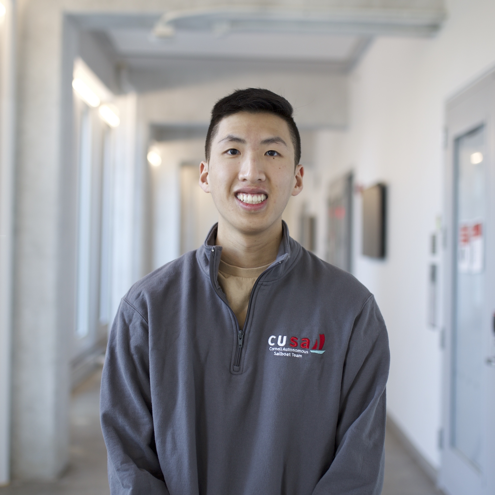
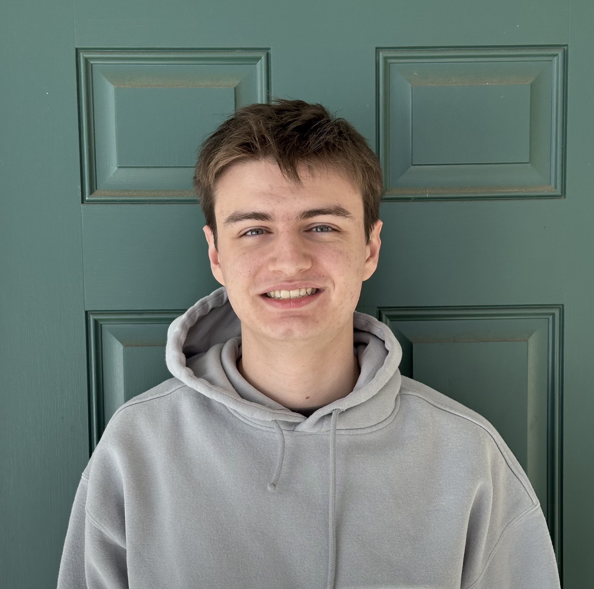
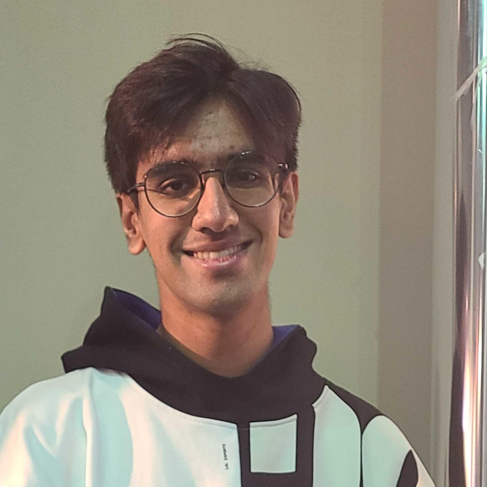

Overview
How do we get robots out of the labs and into the real world with all it's complexities?
Robots must solve two fundamental problems -- (1) Perception: Sense the world using different modalities and (2) Decision making: Act in the world by reasoning over decisions and their consequences. Machine learning promises to solve both problems in a scalable way using data. However, it has fallen short when it comes to robotics.
This course dives deep into robot learning, looks at fundamental algorithms and challenges, and case-studies of real-world applications from self-driving to manipulation. We look at:
- Imitation and interactive no-regret learning that handle distribution shifts, exploration/exploitation.
- Practical reinforcement learning leveraging both model predictive control and model-free methods.
- Learning perception models using probabilistic inference and 2D/3D deep learning.
- Frontiers in learning from human feedback (RLHF), planning with LLMs, human motion forecasting and offline reinforcement learning.
Schedule (Tentative)
| Date | Lecture | Preread | Resources |
|---|---|---|---|
| Fundamentals | |||
| 08/27/24 | Introduction to Robot Learning [slides] | The Bitter Lesson | |
| 08/29/24 | Robots as Markov Decision Problems [slides] | MACRL Ch. 1 (page 1-5) | Dan Klein slides I |
| 09/3/24 | Solving MDPs [slides, notes] | MACRL Ch. 1 (page 6-end) | Dan Klein slides II |
| 9/5/24 | Behavior Cloning, Feedback and Covariate Shift [slides, notes] | MACRL Ch. 6, Pg. 53-57 | Three regimes of covariate shift, Watch Imitation Learning Lecture! |
| 9/10/24 | Behavior Cloning, Feedback and Covariate Shift(Part 2) [slides, notes] | MACRL Ch. 6, Pg. 53-60 | DAGGER |
| 9/12/24 | DAgger: Interactive Experts and No-Regret Learning[slides, notes] | MACRL Ch. 6, Pg. 53-60 | DAGGER |
| 9/17/24 | No Class | ||
| 9/19/24 | Continuous MDPs: Linear Quadratic Regulator [recorded lec, slides, notes] | MACRL (Ch 2, 23-27) | |
| 9/24/24 | Model Predictive Control [slides] | DeepMind MPC overview | |
| 9/26/24 | Guest Lecture: Wen Sun - Policy Gradients 1 [slides]] | MACRL (Ch 11), Pg 129-133 | |
| 10/1/24 | Guest Lecture: Wen Sun - Policy Gradients 2 [slides] | MACRL (Ch 11), Pg 133-end | |
| 10/3/24 | Guest Lecture: Gokul Swamy - Policy and Q Iteration 1 [slides] | MACRL (Ch 8), Pg 79-89 , Performance Difference Lemma | |
| 10/8/24 | Guest Lecture: Gokul Swamy - Policy and Q Iteration 2 [slides] | ||
| 10/10/24 | Prelim Review [slides] | ||
| 10/15/24 | Fall Break (No Class) | ||
| 10/17/24 | Prelim | ||
| 10/22/24 | Model-based RL [slides] | Model learning with planner in the loop , | |
| 10/24/24 | Model-based RL (part 2) [slides] | Simulation Lemma | |
| 10/29/24 | Generative World Models v/s Sim2Real [slides] | DREAMER | |
| 10/31/24 | Imitation Learning with Privileged Information in Sim2Real [slides] | Learning Dextrous In-Hand Manipulation (OpenAI) |
Assignments, Prelim and Final Project
There will be a total of 6 assignments. The first one checks prerequisites. Three of the assignments will be written. Three of the assignments will involve programming. As the course progresses, we will release each assignment in the links below.
- Assignment 0: Fundamentals
- Assignment 1: Written
- Assignment 2: Programming
- Assignment 3: Written
- Assignment 4: Programming
- Assignment 5: Programming
Every assignment has a question which is compulsory for CS 5756.
We will have an in-class prelim ( tentatively 10/17/24 ). The prelims will test concepts taught in the lectures and written assignments.
There will also be a final project. This is your chance to get creative and apply what you have learned! For the project, you may work in groups of up to 3 people. There will be three deliverables - a project proposal, a final report and a final presentation. For more details, please refer to this document.
Resources
Technology
- Course Website: The ONE true hub for all information. Please check this frequently and surface any errors or sources of confusion.
- Ed: The discussion forum where all announcements are sent, where all student-TA and student-student communications occur.
- Gradescope: Where all assignments and projects are submitted.
- Canvas: No use.
Code
- Python Notebooks for CS4756: A series of notebooks used in the lectures that are useful for building intuition and learning to code.
- Python + Numpy tutorial: An excellent, concise getting started guide for Python and Numpy from CS231@Stanford.
- Pytorch tutorial: A 60 minutes Blitz!.
Relevant Textbooks
The course is extensively based off of the following book:
- Modern Adaptive Control and Reinforcement Learning (MACRL), James A. Bagnell, Byron Boots, and Sanjiban Choudhury
Other helpful books and notes:
- Probabilistic Robotics, Sebastian Thrun, Wolfram Burgard and Dieter Fox
- Reinforcement Learning: An Introduction, Richard S. Sutton and Andrew G. Barto
- Probability Theory: The Logic of Science,, E.T. Jaynes
Courses / Lectures
- Imitation Learning: A Series of Deep Dives, Sanjiban Choudhury
- Interactive Online Learning: A Unified Algorithmic Framework, Sanjiban Choudhury
Staff
 |
Sanjiban ChoudhuryInstructorsanjibanc@cornell.eduOffice Hours: Tuesday 1.00 - 2:00 pm, Gates 413 B |
Prithwish DanTeaching Assistantpd337@cornell.eduOffice Hours: Wednesday 10:00 am - 12:00 pm, Rhodes 404 |
||
|  | Nathaniel ChinTeaching Assistantnlc62@cornell.eduOffice Hours: Thursday 2:00 pm - 4:00 pm, Rhodes 404 |
 | Adam CahallTeaching Assistantabc256@cornell.eduOffice Hours: Wednesday 3:00 pm - 5:00 pm, Rhodes 404 |
|
|  | Atiksh BhardwajTeaching Assistantab2635@cornell.eduOffice Hours: Sunday 1:00 pm - 3:00 pm, Rhodes 404 |
Qian MengTeaching Assistantqm34@cornell.eduOffice Hours: Friday 9:30 am - 11:30 am, Rhodes 404 |
||
Zach GarciaTeaching Assistantzag7@cornell.eduOffice Hours: Tuesday 4:00 pm - 6:00 pm, Rhodes 404 |
Ved SriramanTeaching Assistantvs346@cornell.eduOffice Hours: Thursday 5:00 pm - 7:00 pm, Rhodes 404 |
|||
Zubin BhaumikTeaching Assistantzb57@cornell.eduOffice Hours: Monday 12:15 pm - 2:15 pm, Upson 206 |
Riley CooganTeaching Assistantrmc329@cornell.eduOffice Hours: Monday 2:00 pm - 4:00 pm, Rhodes 404 |
Assignments, lectures, and ideas on this syllabus are partially adapted from Drew Bagnell course at Carnegie Mellon University. We thank Drew for insightful discussions and suggestions for how to structure the course.
Syllabus
Learning Outcomes
- Formulate various robot perception problems, e.g. state estimation, object detection, mapping as probabilistic inference.
- Formulate various robot decision making problems, e.g. self-driving, manipulation, assistive robots, as Markov Decision Problems (MDP).
- Implement and compare various deep learning approaches to train robot perception models for 2D / 3D vision.
- Implement and compare various learning algorithms to train robot policies for imitation learning, reinforcement learning and model predictive control.
- Identify sources of distribution shift in robot learning and apply appropriate techniques from online learning to counter it.
- Design and benchmark robot learning algorithms that integrate with open-source robot datasets and simulation platforms.
Prerequisites
MATH 1920/ MATH 2220, MATH 2940, CS 1110, CS 4780 or permission of instructor. This course is targeted towards senior-level undergraduate students and junior graduate students. Graduate students should enroll in the graduate version of the course. Students should have a solid background in linear algebra and probability. This course involves implementing state of the art algorithms on real world datasets and simulators. Hence, strong familiarity with Python and neural network libraries (Pytorch / TensorFlow/ JAX) is required.
Grading Policy
Here’s a breakdown of grades:
| Component | Details | %Grade |
|---|---|---|
| Assignments | 6 assignments (5% + 5*9%) | 50% |
| In-class Prelim | 20% | |
| Final Project | Final Report: 10%, Final Presentation Video: 10% |
20% |
| Participation | In-class participation | 10% |
| Total | 100% |
Assignments must be done individually. Each assignment will require students to turn in a writeup and code in Gradescope. It is acceptable for students to discuss problems with each other; it is not acceptable for students to share answers or code. Please indicate on each homework with whom you collaborated with and what online resources you used.
Every assignment has a question which is compulsory for CS 5756.
The final project can be done in groups of up to 3. There are three deliverables - an extended abstract, a final report, and a final presentation video. We will share a template for abstract and final report in due time. The final presentation will be in form of a 5 minute video that will be reviewed by your peers!
Research has demonstrated that the best learning occurs when the learner is actively involved. We will have frequent opportunities for students to work together during lectures. We expect you to come to class prepared to focus, interact with classmates, and participate in the activities. We also expect you to participate in discussions on Ed and create an engaging environment.
Late Policy
Assignments must be submitted by the posted due date. You are allowed up to 3 TOTAL LATE DAYs throughout the entire semester. If you exceed the late days, assignments will incur a reduction in score by 33% for each extra day. Regrade requests, if the case is strong and a significant number of points are at stake, should be submitted via Gradescope one week of when a deliverable is returned to the student. You must provide a justification for the regrade request.
In case of a legitimate situation or medical emergency that arises during the semester that is going to hinder your ability to complete the work on time, contact Prof. Choudhury as soon as possible. Extensions (beyond the already assigned slip days) will be granted only in exceptional circumstances, such as documented illness, not for situations such as job interviews or large workloads in other courses.
Academic Integrity
This course adheres to all aspects of Cornell's Code of Academic Integrity. Any work presented as your own must be your own, with no exceptions tolerated. Submitting work created by ChatGPT, or copied from a bot or a website, as your own work violates Academic Integrity. All violations of this policy will result in a penalty depending on the severity. The penalty may be a failing grade on the relevant assignment or exam, or a failing grade in the class. The code can be found at: http://cuinfo.cornell.edu/aic.cfm
Generative AI
The work you do consists of writing code and natural language descriptions. To some extent, the new crop of “generative AI” (GAI) tools can do both of these things for you. However, we require that the vast majority of the intellectual work must be originated by you, not by GAI. You may use GAI to look up helper functions, or to proofread your text, but clearly document how you used it.
In this class, for every assignment and final project, you can choose between two options:
Option 1: Avoid all GAI tools. Disable GitHub Copilot in your editor, do not ask chatbots any questions related to the assignment, etc. If you choose this option, you have nothing more to do.
Option 2: Use GAI tools with caution and include a one-paragraph description of everything you used them for along with your writeup. This paragraph must:
- Link to exactly which tools you used and describe how you used each of them, for which parts of the work.
- Give at least one concrete example (e.g., generated code or Q&A output) that you think is particularly illustrative of the “help” you got from the tool.
- Describe any times when the tool was unhelpful, especially if it was wrong in a particularly hilarious way.
- Conclude with your current opinion about the strengths and weaknesses of the tools you used for real-world compiler implementation.
Below we provide some guidelines for what is / is not ok when using GAI for this class:
- Example of something that is allowed: You write the initial code / writeup. You then use GAI to debug the code / improve writing flow. You do not use the system's output to add extra content.
- Example of something that is definitely not allowed: You essentially use GAI to generate most of the code / writeup, even if you later post-edit and correct the output.
- Example of something that is OK but requires special treatment: You start with procedure in 1. But, the GAI suggests good points that you hadn’t thought of before, or makes you realize that a point you had made isn’t quite right. You may include this new material, but follow the guidelines above to document the use.
Diversity, Equity and Inclusion
Students in this course come from a variety of backgrounds, abilities, and identities. In order to ensure an environment conducive to learning, all members of the course must treat one another and the course staff with respect. If you feel your needs are not being adequately accommodated by the other students or instruction staff, please contact Prof. Choudhury.
COVID-19 related issues
Zoom recordings of lecturers are not available for absences, including absences due to illness.
If you are a close contact with someone who is diagnosed with COVID19, even if you do not experience symptoms, you should test yourself [and you may want to request masking for five days after exposure regardless of the outcome].
If you have symptoms of COVID19 and have not been tested:- Do not come to class.
- Email Prof. Choudhury before class starts to let [me, TA] know that you are not coming.
- Get an antigen test.
- If the test is negative, you may return to the next class. Please wear a mask until your symptoms are gone, even if you test negative.
- If your antigen test is positive, please let Prof. Choudhury known and follow the guidance here: https://health.cornell.edu/resources/health-topics/COVID.
Accomodations
Your access in this course is important to me. Please request your accommodation letter early in the semester, or as soon as you become registered with Student Disability Services (SDS), so that we have adequate time to arrange your approved academic accommodations. Once SDS approves your accommodation letter, it will be emailed to both you and me. Please follow up with Prof. Choudhury to discuss the necessary logistics of your accommodations. If you are approved for exam accommodations, please consult with Prof. Choudhury at least two weeks before the scheduled exam date to confirm the testing arrangements. If you experience any access barriers in this course, such as with printed content, graphics, online materials, or any communication barriers, reach out to me or SDS right away. If you need immediate accommodation, please speak with me after class or send an email message to me and SDS at sds_cu@cornell.edu.
Mental Health and Well-being
Your health and wellbeing are important to me. There are services and resources at Cornell designed specifically to bolster undergraduate, graduate, and professional student mental health and well-being. Remember, your mental health and emotional well-being are just as important as your physical health. If you or a friend are struggling emotionally or feeling stressed, fatigued, or burned out, there is a continuum of campus resources available to you: https://mentalhealth.cornell.edu/get-support/support-students . Help is also available any time day or night through Cornell’s 24/7 phone consultation (607-255-5155). You can also reach out to me, your college student services office, your resident advisor, or Cornel Health for support.